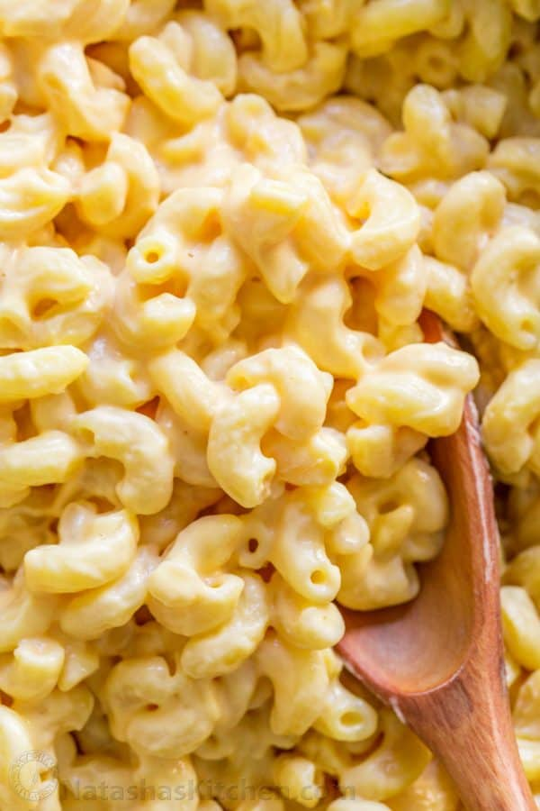

Description
This homemade Mac and Cheese has the ultra-creamy sauce that is easy to whip up and enjoy!
Ingredients
- 12 oz elbow macaroni pasta
- Salt for pasta cooking water
- 12 oz evaporated milk
- 2 large eggs
- 6 oz havarti cheese (2 cups grated)
- 6 oz colby jack cheese (2 cups grated)
- 3/4 tsp sea salt
- 1/3 cup sour cream
Steps
- Bring a large pot of salted water to a rolling boil. Add pasta and cook according to package instructions. Reserve 3/4 cup pasta cooking water, then drain remaining water and set pasta aside in the pot.
- In a medium saucepan, combine 12 oz evaporated milk, 2 eggs, both grated cheeses and 3/4 tsp salt. Place saucepan over medium/low heat and cook 6-8 minutes, whisking constantly, until completely smooth and thickened. As soon as it has visibly thickened, remove from heat. Do not overcook or boil or it may curdle.
- Off the heat, whisk in 1/3 cup sour cream then stir in drained pasta. Season with salt to taste. If the sauce gets too thick, you can thin it out with some of your reserved pasta water.